Carbohydates
Carbohydrates are a major source of energy of our body, and they come mainly from grains, such as rice and noodles. Besides, other foods such as fruit, root vegetables, dry beans and dairy products also contain carbohydrates. Examples:
- 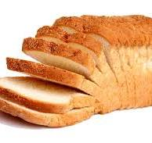Bread
- 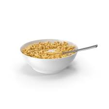Cereal
- Berries
- Crackers
- Legumes
Protein
Meat, fish, seafood, eggs, dairy products, dry beans and bean products are good sources of protein. Its major functions include building, repairing and maintaining healthy body tissues. Examples:
- 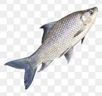Fish
- Chicken
- Beef
- Cow
- Eggs
Fats
Fats can be found in foods such as meat, dairy products, nuts, seeds and edible oils. Fats serve as a kind of energy source. They prevent heat loss in extreme cold weather and protect organs against shock. They are responsible for making up part of our body cells and transporting fat-soluble vitamins such as vitamin A, D, E and K. Examples:
- 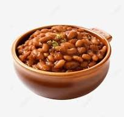Beans
- 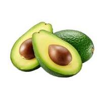Avocado
- Butter
- Palm and Coconut Oils
- Seeds
Vitamins
There are many kinds of vitamins from various food groups and they participate in different body metabolism such as maintaining healthy skin and hair, building bones and releasing and utilizing energy from foods. Vitamins can be classified into water-soluble and fat-soluble vitamins. Examples:
- 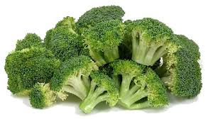Broccoli
- 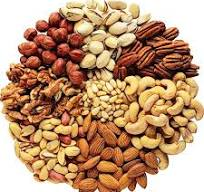Nuts
- Citrus fruits
- red and green pepper
- potatoes
Minerals
Minerals are a group of essential nutrients which regulate many body functions such as fluid balance, muscle contraction and transmission of nerve impulses. Some minerals are structural component of the body, such as calcium in bones and teeth. Example:
- 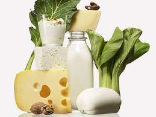Calcium
- 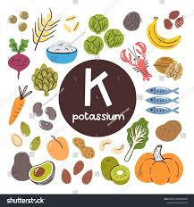Potassium
- sodium
- magnesium
- sulphur
Dietary fibre
Dietary fibre is the indigestible part found in plant. It helps stablise blood sugar, promote gastrointestinal health and prevent constipation. Dietary fibre can be classified into soluble and insoluble fibre. Examples:
- 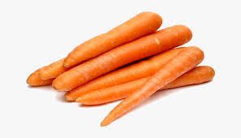carrot
- 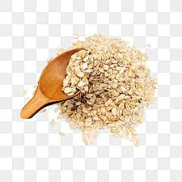oatmeal
- driead beans
- legumes
- vegetables
Water
Water is the most abundant substance in human body and is also an essential nutrient to maintain our health. The major functions of water include regulation of body temperature, production of body fluids, transportation of nutrients and removal of waste products.
- Examples of water as a class of food:
 Water melon
Water melon- 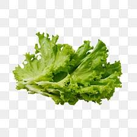Lettuce
- Water cress